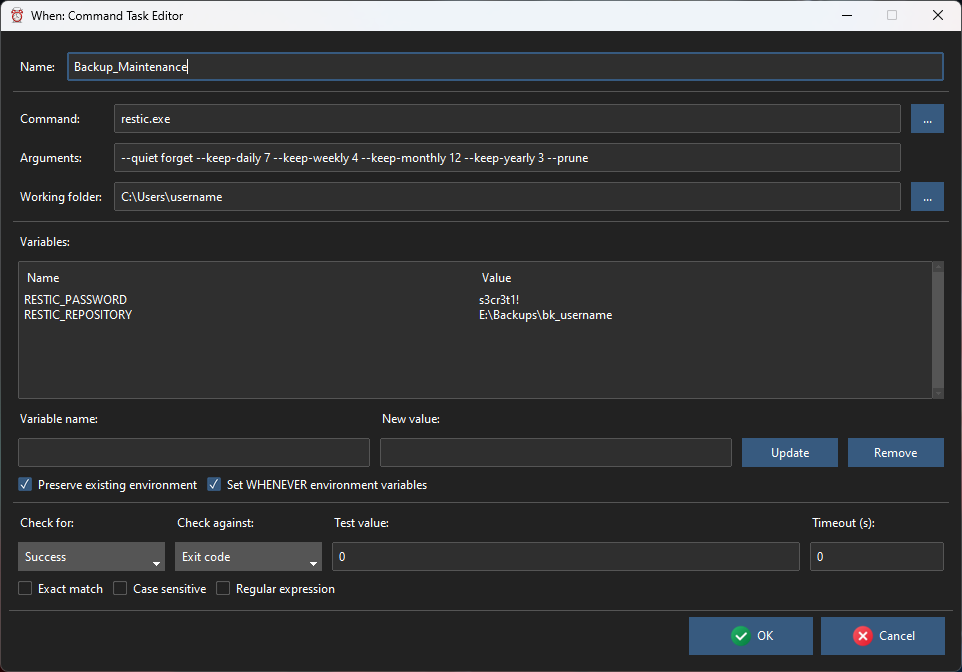
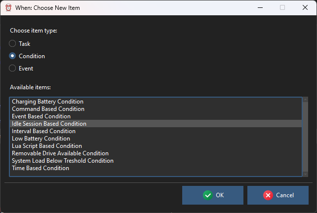

Tutorial
Dealing with When forms for the various kinds of items, with all the parameters that are available for each item type – especially for the standard items that form the base for more specialized ones – can actually be tough: When and whenever are designed to be flexible, and flexibility comes at the cost of having many options to configure each task, condition, and possibly event that whenever should listen to.
In this chapter I will try to illustrate some real life use cases of When, step by step: in fact these use cases come from what I use (or have been using) it for.
The proposed examples are the following:
implementation of a simple trace task
how to easily automate backups
cleanup some temporary files
and every example starts by invoking the main configuration window:

either from the command line or by selecting Configurator from the menu while When is running in the background.
The examples assume that When has been installed using the suggested method, and that, therefore, whenever is also available.
Simple Trace
It’s sometimes useful to have the ability to trace the configuration of one or more conditions for debug purposes: configuring a condition can sometimes be awful, especially when it is one of the most complex ones (such as a command or a Lua based condition), and you might just want to test your condition with no side effects other than dropping a line to the log. For this I use a simple trace task, consisting in a minimal Lua script:
log.warn("Trace: *** VERIFIED CONDITION *** `" .. whenever_condition .. "`");
that exploits the abilities of the internal Lua interpreter to
access the name of the condition that triggered it
write log messages at different severity levels.
To create such a task, we only need to click New in the main configuration window (which can be accessed either from the popup menu of a running instance, or by typing when config in a terminal or console window), and select a Lua Script Based Task from the list:

then change the name to TRACE (or whatever else that is meaningful: just remember that item names must begin with a letter, followed by alphanumeric characters and underscores, and that these names are case sensitive) and paste the script found above in the task editor Script section:

Since this is just a trace task, we do not need to check any result, thus we just click ok. Just for the sake of completing the process, we will also define a condition to trigger the TRACE task every minute. In the main configuration window, click New, and in the item type dialog select first Condition in the upper part, and then select Interval Based Condition and click OK. The condition editor is opened: conditions are more complex than tasks, and the editor form has two tabs, of which the first is for common parameters, and the second for parameters that are specific for this type of condition. The name and the tasks to be run belong to the common part, so we change the name to something meaningful (in our example it is Periodic_60sec). Since we want to run the task periodically, we must also ensure that the Check condition recurrently has a tick, otherwise the TRACE task will run only once, a minute after When has started. After this, we select TRACE from the drop down list labeled Task and click the Add button at its right. The scenario is now the following:
and we still have to specify the “one minute” part. Being this specific to interval based conditions, we can find it in the other section, corresponding to the Specific parameters tab:

We only have to enter 1 in the input box, and leave the unit of measure drop down list alone, as it defaults to minutes. Now we can click OK and, when back to the main configuration box, click on Save to save our changes: When may ask us to confirm that we want to overwrite the file if present, which is true most of the times. Since the configuration file cannot be saved elsewhere, so we have to answer positively unless we want to discard it.
If the configuration utility had been launched through a running instance of When, then a Reload button is available: this can be used to force the new configuration to be reloaded and the new items to be active immediately without the need to restart When. If you do not click Reload (or if you don’t confirm), the new configuration will be available at the next start of When – usually, after the subsequent login.
See also
This example corresponds to the basic initial configuration that is suggested in the whenever installation instructions, that can be found in its releases pages and in the binary distribution.
Automated Backups
In this example I will use restic as a personal backup tool: it is a great piece of software, which offers features normally available in professional backup systems in a streamlined CLI interface, can be used with an unimaginable amount of backends directly or by means of another great utility, that is rclone. Both are open source, and both are very actively developed. I’ll assume that you already installed restic to initialize a repository, for instance on a locally mounted SD card on a Windows PC. The process is as easy as the following interactive CLI session (via the Terminal app or by manually starting cmd):
C:\Users\username> restic init --repo E:\Backups\bk_username
enter password for new repository:
enter password again:
created restic repository c0f1bad70e at E:\Backups\bk_username
Please note that knowledge of your password is required to access the repository.
Losing your password means that your data is irrecoverably lost.
When prompted, you should type and confirm a password: let’s assume you chose the string s3cr3t1!. E: is assumed to be the drive letter assigned to the mounted SD card, Backups\bk_username is a directory of your choice on that drive. username can be replaced with your account name: I find it sensible to have a directory dedicated to your account for a local backup, but it is a matter of taste. Of course you should keep your password, for instance by preserving it via a password manager.
We will use the environment variable method to let restic know where the repository is, and its password. This means we should define the following environment variables with the respective values:
RESTIC_REPOSITORY:E:\Backups\bk_usernameRESTIC_PASSWORD:s3cr3t1!
As we do not want to pollute the environment, we will set these variables directly in the task definitions. We will define two tasks:
the first task will actually backup some directories,
the second task will perform some backup repository maintenance.
We want to backup our Documents and our Pictures directories: on Windows they are located respectively in C:\Users\username\Documents and C:\Users\username\Pictures.
Tip
Depending on the amount of data, the first backup can take quite a long time in order to be carried out: consider the option of forcing a full backup by issuing the command restic backup Documents Pictures from the command line in your home directory, before automating it using When.
First off, we launch the configuration utility: if the program icons for When had been created as described in the installation instructions, then clicking Configure When on the desktop or in the Start menu should be sufficient. Other options are to launch when config from the command line or, if there is an instance of When running, to right-click the clock-shaped system tray icon, and to select Configurator from the context menu. The result is the same, apart from what we’ll see below for the latter, that is the configuration GUI utility is launched, and we will click the New button, which in turn allows us to select a Command Based Task:

Clicking OK takes us to the specific task editor. We choose to start restic in the home directory, in order to only mention subdirectories on the command line: this can be done by specifying the home directory in the Working Folder text entry, which can also be done by selecting it via the three-dotted button on its right side. Actually, for new Command Based Tasks, When proposes the home directory as the default value for this entry, so in our case it can be just left as it is.
We have to define the two aforementioned variables in our task environment: to do so, for each of them, the name (which on Windows is not case sensitive, but it could be better to respect the casing specified in the restic documentation just to be sure) has to be written in the entry labeled Variable Name, the value in the one labeled New Value, and then the Update button has to be clicked. Clicking Update either sets a new variable (if the name is not present) or updates an existing one.
Before clicking OK the form should be configured as follows:

The reason why we chose to check for a failure in restic and that such failure only occurs with an exit code of 1 is that this is the exit code that restic uses to inform that no snapshot could be taken at all. Since some files could be open during backup (it should be unattended, after all), maybe restic will not be able to backup really everything. So we consider our backup to be a failure only when it is a complete failure.
We could have accepted the suggested name for the task, something similar to CommandTask_086F5F6C49, but it would have been hardly recognizable when defining under which conditions it should take place, thus we chose Backup_DocumentsAndPictures.
We also want to perform some maintenance after we backed up our stuff. Namely we would save some space by keeping:
one snapshot per day for the last 7 days
4 weekly snapshots before the daily ones (thus, roughly one month)
at least one year of monthly snapshots
3 other snapshots in the past, one per year.
Yes, restic allows us to do so: everybody loves restic and this is not a surprise to me. Following the documentation we should build a command line like the following:
restic --quiet forget --keep-daily 7 --keep-weekly 4 --keep-monthly 12 --keep-yearly 3 --prune
which translates to the following form:

where the other entries are absolutely similar to the ones provided for the backup task, except that we expect restic to return a zero exit code for success: this is a repository-only operation, and every unusual outcome should be notified. We will call this task Backup_Maintenance.
Ideally, the backup task should be run before the maintenance one. Also ideally, the maintenance task should be not performed if the backup task fails: we could lose a backup without replacing it with a new one, and we would like to avoid it.
Now it’s time to decide when our backups have to take place: backups can be a lengthy (and noisy, considering fans) operation, thus I usually prefer that they are performed when I’m not using my laptop. So we will configure a condition that roughly indicates that we are away for a coffee. An idle time of three minutes should be enough for that. Moreover, choose not to backup more than once per session.
We click on New again, and this time we select Condition as item type, Idle Session Based Condition in the list, and then click OK.

In the Common parameters section we specify the tasks that have to be executed: we choose them from the drop down list below the list of active tasks, first we choose the backup task and add it, then the maintenance task:
Since we do not want multiple backups in a session, we ensure that the Check condition recurrently box is not checked; as backups are something critical and we do not want to mess up things in case of an error, we leave 0 in the Max tasks retries field, so that When will not insist in running our backup routine when something goes wrong. The tasks have to be run sequentially: restic can perform one operation at a time, so we leave that option intact. And we also choose to stop execution if a task fails because, as we said above, we do not want to perform the maintenance step when a backup has failed.

We name the condition AwayFromKeyboard01_Once: I prefer to use the Once suffix for non recurrent conditions, in order to be sure that conditions that have triggered their tasks only once were actually intended to do so.
The only thing that is left is to specify that the task sequence has to take place after three minutes of idle time, so we move to the Specific parameters tab:

Here we just write 3 in the only available text entry: minutes is the default unit of measure for time and can be left alone. Now we can press OK and then, in the main configuration form, click the Save button (we answer positively when possibly asked to overwrite the existing file): the next time When is started as resident frontend for whenever, our unattended backup routine will be scheduled for when we leave the workstation alone for three minutes. In case the configuration utility was accessed through the system tray menu, the configuration form will include a Reload button which, when clicked, reloads the configuration file (after saving it) and dynamically adds the new condition and the two tasks, that will be immediately active in the running instance of the scheduler.
In case you are used to just close the lid of your laptop to let it sleep, instead of shutting down your PC, you may want to verify that the Reset conditions on system resume box is checked in the Global Parameters page of the main configuration form, before saving the file:

so that, when your laptop wakes up from sleep, the automation tool will perform a backup again as soon as the PC remains alone for three minutes.
Temporary Files Cleanup
This example was in the original When tutorial, I found it useful on Linux because many utilities leave temporary backups (those files that end with a tilde ~ character) when you modify a file by default. On one hand I didn’t want to modify the default settings of all of these utilities, and on the other I didn’t like to find my Documents folder full of these files that I had to find and remove from time to time.
This example takes place on an up-to-date Linux machine, assuming a working Gnome on X.org desktop session, and a simple shell script will be used as the cleanup command. It also assumes that the CLI command to move files to the Trash bin is installed, in order to avoid to completely remove these files, as they could be useful anyway in some cases. If the trash command is not available, the following command can be used on Debian based distributions:
sudo apt install trash-cli
On other distributions something similar should be available. We will create a shell script in the ~/.local/bin directory: if When was installed via pipx according to the installation instructions this directory should be already present and in the PATH. So the following commands can be run in a terminal window:
cd ~/.local/bin
nano housekeep.sh
which open the popular nano editor for our housekeep.sh script. We enter the following code in the editor:
#!/bin/sh
find . -path ./.local/share/Trash -prune \
-o -type f -name '*~' \
-exec echo '{}' \; \
-exec trash -f '{}' \;
and save the file hitting Ctrl+S, then Ctrl+X to exit the editor. The reason for the -path ./.local/share/Trash -prune line is that, since this script could be started in any directory, including the home directory (where ./.local/share/Trash is found), we do not want the script to handle files already in the Trash bin again. Of course, being this a single command, the same command could have been placed directly in the command section of a Command Based Task, but a small script does not really introduce extra costs and makes things somewhat more clear. At last we change permissions for the script, in order for it to be executable:
chmod a+x housekeep.sh
while still in the ~/.local/bin directory. We move back to the home directory and launch the configuration utility:
cd
when config
Of course, if When is already running, the tray icon can be clicked and Configurator can be selected in the popup menu form. The task has to be created first, and clicking New and selecting a command based task as in the previous example brings up the command task editor form. We just change the name of the task to be something more understandable, point to the script as our command and set the working directory:

Note that the Command entry shows the full path of our command: this is because I used the three-dotted button at the side of the entry to open a dialog box that allows to look for the executable file. Actually, if housekeep.sh is in the PATH as expected, we could just type housekeep.sh in the entry itself.
We leave all other parameters alone, because the script takes no arguments and does not explicitly return anything meaningful. What we want is for it to run from time to time regardless of the outcome: if one or more files could not be sent to the bin, it probably will happen the next time the script runs. Now we set up a condition to tell whenever in which case the script has to be run. The script is in fact very lightweight, and it will probably never really bother us. However, running it on a strict (and possibly tight) time schedule might be overkill: some other possible choices that do not depend on time are
on idle time
when the workstation isn’t really working a lot
when a file in the ~/Documents directory is modified.
We used the first type of condition in the previous example. The third one might be interesting, but it can lead to a lot of work, especially if the contents of the folder change often (which is likely to happen). So we go for the second option: we click New again, select Condition as item type, and choose a System Load Below Threshold Condition:
Clicking OK takes us to the condition editor. In the common section we change the condition name and specify the task to be run, by selecting it from the drop down list. It will be the only task, so every other common option has little or no influence, and we leave them as per default:

The name is now SystemLoad_HouseKeeping, which is meaningful enough for us. We also checked the Check condition recurrently option: we said that we want to run the script from time to time during the session, and leaving the option unchecked means that the script will be executed only once per session – that is, after the first successful condition check, no more checks will take place.[1]
Going to the common section, we can leave the value for the Load is Below entry as 3% (that is, the default): it is quite low but not completely unlikely to happen on most modern workstations. Of course your case could be different, and a higher value might be more appropriate.

After clicking OK we are done: we can now save our new configuration and it will be active at the next start of When. Or, as in the previous example, When can reload the configuration by clicking the Reload button – which is available if the configuration has been edited accessing the configuration utility from the popup menu in a running When instance.
Conclusion
There are many ways to use When as an automation tool, this tutorial only shows some of them. Possibly, with time, the tutorial will be further enriched with other examples, to help build other, possibly more complex “action flows” which can be useful in everydays activity: the tutorial is an ongoing task.